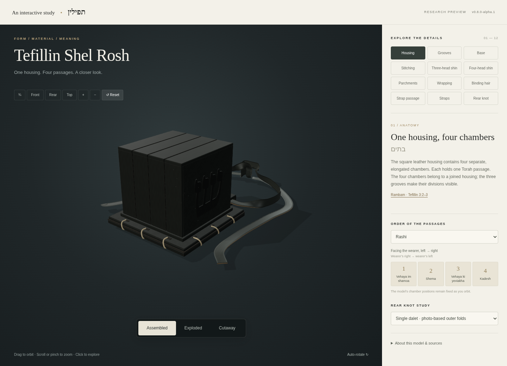

Explore · Rotate · Discover
3D Torah Artifacts
A growing collection of interactive models. Explore the form, details and sources behind objects of Jewish life.

Interactive study · Research preview
Tefillin Shel Rosh
Explore twelve components, compare passage arrangements, and look inside with assembled, exploded and cutaway views.
Explore the model →